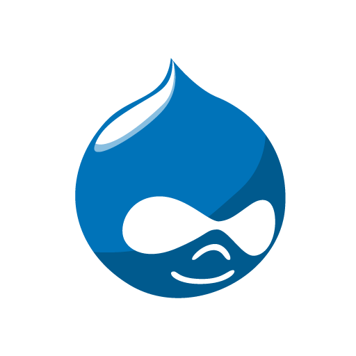

About Me
Web developer, especially drawn to front-end technologies like Javascript and CSS. Drawing on my background in journalism and multimedia production. As a former newsman, I'm passionate about the power of information and effective communication.
Technologies
Drupal: Site builder since 2012. In addition to building Drupal sites, I've attended Florida Drupal camp, given presentations at Broward Drupal meetings, and translated Drupal curriculum from Spanish to English.
Angular JS: Newer addition to JS frameworks, Angular has an approach to MVC that I find easy to work with. Custom directives are very useful to segment DOM elements and deliver clean markup.
Javascript: Critical to all client-side endeavors, I've been working with Javascript for several years. Interesting projects include games using the Phaser library, and the Popcorn.js video toolset from Mozilla.
Ruby on Rails: Recently added Ruby and Rails to my toolkit through a bootcamp in Chicago in 2015. Rails is amazingly quick to develop an API server or SPA. I love the ability to get elbows-deep in code and spin up something quick.
Drupal 7 - Client Project
Features
- Built and deployed to AWS
- Integrates Views, custom content, Panels pages
- Custom theming elements: various tpl, preprocess functions
- Custom CSS with Bootstrap module
Angular JS - Project

Features
- Fetch movie theater listings by zip code
- Fetch tv programs by date; filter by event type
- Utilizes Gracenote API tools
- Clean data for presentation, scrub bad data, remediate duplicates, format data
- Create NG-Directives to extract presentation components
- Custom NG-Filters for dynamic filtering
HTML5 / CSS3 / Javascript - Client Project
Features
- Design, build and deploy
- Custom CSS, design and Javascript implementation
- Custom jQuery for dynamic loading video playlist
Javascript - Projects
Video Annotation
Features
- Dynamically load videos and scripts
- Auto-play and stop to write annotations
- Records timecode where comments are entered
- Builds on Mozilla's Popcorn JS library
Fast Football Game
Features
- Integrates jQuery UI library
- Custom game logic tracks yards, play count, etc.
- Designed graphics, illustrations
- Design, build and deploy